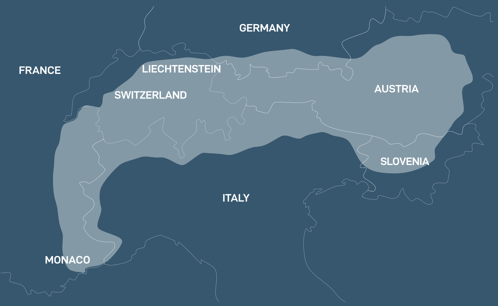

To climb a peak is to make an expedition, but to cross a pass is to travel
The Alps stretch 1,200km across the European countries of France, Switzerland, Italy, Monaco, Liechtenstein, Austria, Germany, and Slovenia. They form an arc from France in the west to Slovenia in the east and include 82 peaks over 4,000m in height.
Rising dramatically in the east of France to their highest point at Mont Blanc, the Alps then continue through Switzerland and into Austria before sinking in Slovenia. The Alps meet their most southern point in France, meeting the Mediteranean sea.

Over 14 million people call the Alps home and they have been inhabited for 5000 years. The Alps created a barrier between the people, both in their size and difficulty of access as much as in language, and culture. Over the years trade developed over their passes and these became strategic and sort after by everyone from bishops to emperors.
In the last 100 years the Alpine countries have become more integrated and the difficulties of travel and trade have been solved. The alps have now a major tourist area with winter sports bringing the most visitors to the region. As the climate continues to warm and snow becomes less predictable, many resorts are attempting to use technology to preserve the winter season and develop new ways of attracting visitors during the summer.
Photo: Erol Ahmed
The Alps existed long before Thomas Cook, some 770 million years before in fact, but the human fascination with that explosion of tectonic forces slap bang in the middle of Europe that we enjoy today is in part thanks to tourism. Cook first took travellers to Switzerland in 1863 and it was via Chamonix that they first discovered the mountains. And what mountains.
The countries of the Alps are different animals, France and Italy are wilder and more relaxed in everything from attitudes to accommodation. Switzerland and Austria are more buttoned down, with Switzerland the most law abiding and expensive. That some of the countries share borders and languages is impressive. The laid back Italian way finds its way into southern Switzerland and where you can get a speeding ticket for 1kph over the limit in Switzerland, in Italy you may get tacit appreciation of your speeding.
The French Alps
The French Alps are the most varied in the region. The highest peaks are found in the Mont Blanc range and head south as far as the Mediterranean sea. France offers the widest range of destinations from medieval villages to modern resorts.
Chamonix - The Alps poster boy for mountain sports.
The Swiss Alps
The mountain ranges of Italy start in the Aosta valley and hug the Swiss and Austrian borders, often descending to the great lakes of Como, Garda and Maggiore. The Dolomites are the most famous of the Italian Alpine ranges and they meet the Austria border in the corner of Italy.
The mountain ranges of Italy start in the Aosta valley and hug the Swiss and Austrian borders, often descending to the great lakes of Como, Garda and Maggiore. The Dolomites are the most famous of the Italian Alpine ranges and they meet the Austria border in the corner of Italy.
The mountain ranges of Italy start in the Aosta valley and hug the Swiss and Austrian borders, often descending to the great lakes of Como, Garda and Maggiore. The Dolomites are the most famous of the Italian Alpine ranges and they meet the Austria border in the corner of Italy.